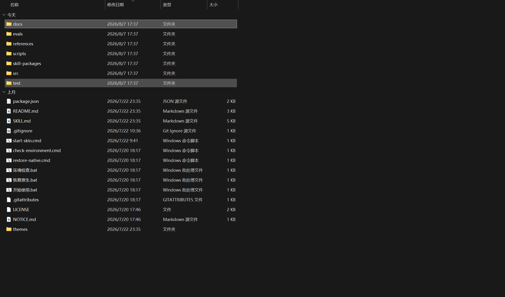
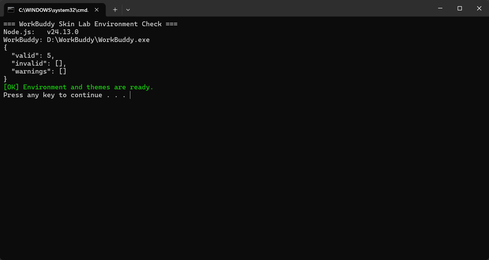

WorkBuddy Skin Lab
从下载到换背景和设置粒子，只需跟着图片做几步，不需要懂代码。
本项目是社区工具，不属于 WorkBuddy 或腾讯官方项目，不会修改 WorkBuddy 安装文件。
升级说明
一、先准备好
- Windows 10/11
- WorkBuddy 桌面端
- Node.js 22 或更高版本
已验证 WorkBuddy 5.3.8。普通换背景不需要 API Key、Python、Pillow 或 Codex。
二、下载 Windows 发布包
打开 v1.4.1 发布页，下载 WorkBuddy-Skin-Lab-1.4.1-Windows.zip。
名称带 Skill.zip 的文件用于可选的 AI 背景生成功能，第一次安装可以先不管。
三、完整解压
在下载文件上点右键，选择“全部解压缩”。
进入解压后的同名文件夹，不要直接在 ZIP 压缩包内部运行。

环境检查.bat 检查电脑环境 开始使用.bat 启动并应用背景 恢复原生.bat 恢复原生界面
英文入口 check-environment.cmd、start-skin.cmd、restore-native.cmd 与中文入口作用相同。
四、检查环境
双击 环境检查.bat。看到 Node.js、WorkBuddy 路径，以及下面的成功提示即可继续：
[OK] Environment and themes are ready.

[FAIL] 行：没有 Node.js 就安装 22+；找不到 WorkBuddy 就确认软件已安装；主题失败就重新解压完整发布包。D:\WorkBuddy\WorkBuddy.exe 会自动识别。五、启动并换背景
- 保存 WorkBuddy 中正在进行的任务。
- 双击
开始使用.bat。 - 首次启动可能会自动关闭并重新打开 WorkBuddy，这是正常现象。
- 点击右上角
🎨，在“主题与背景”中选择候选或自己的图片。 - 按需设置浅色/深色、背景安全区、任务页背景和回答阅读层。
- 在“环境粒子特效”中选择雨、雪、爱心、星星或自定义符号。
- 确认后点击“保存当前主题（下次启动）”。
首页标题、选项、输入框、回答内容和顶部工具栏仍由 WorkBuddy 原生渲染，主题不会替换这些组件。
六、背景图片怎么选
- 推荐 2560×1440，最低 1920×1080，16:9，sRGB；
- 推荐 WebP/JPEG，建议小于 5 MB；
- 重要主体放在右侧，中央和左侧保持简洁；
- 四周保留约 10% 安全边距；
- 避免回答区后方出现文字、强高光和密集纹理。
支持 PNG、JPEG、WebP、GIF 和 SVG。普通图片限制 20 MB；GIF/SVG 限制 3 MB。动态背景更耗资源，优先推荐静态 WebP/JPEG。
七、显示效果怎么选
- 浅色/深色：先选“自动匹配图片”，对比度不合适时再手动切换。
- 背景安全区：人物在右侧时选“左侧”，减少对侧边栏和主要操作区的影响。
- 任务页背景：推荐“自动（柔和）”；只想顶部出现图片时选“仅顶部展示”。
- 回答阅读层：复杂背景上保持“显示（更清晰）”。
八、环境粒子特效
- 粒子特效：关闭、下雨、雷雨、下雪、冒爱心、下星星或自定义符号。
- 粒子强度：性能较弱的电脑建议选择“轻”。
- 粒子速度：可选慢、正常或快。
- 粒子颜色：点击颜色框自由选择。
- 自定义符号：最多两个 Unicode 字符，例如 🌸、♫ 或 ✨。
粒子位于背景层，不接收点击，不会遮挡 WorkBuddy 的按钮、输入框和弹窗。系统启用“减少动态效果”时，动画会自动停止。
不同粒子有各自的自然轨迹：雪花左右飘落，爱心摇摆上浮，星星闪烁下落，自定义符号自由漂浮。粒子位置、延迟和漂移会独立打散，不会再排成规则斜线。
九、恢复原生界面
双击 恢复原生.bat，或在 🎨 → 恢复与重置 中选择“恢复原生界面”。
恢复操作不会删除主题；以后再次运行 开始使用.bat 仍可应用。
十、常见问题
双击入口没有反应
确认 ZIP 已完整解压。在解压文件夹地址栏输入 powershell，再运行 .\环境检查.bat，即可看到不会一闪而过的错误信息。
找不到 WorkBuddy
确认 WorkBuddy 能正常打开。自定义安装路径可通过 WORKBUDDY_EXE 指定，不要修改 WorkBuddy 安装文件。
没有看到 🎨
保存任务并完全退出 WorkBuddy，再依次运行环境检查和开始使用；同时检查端口 9223 是否被占用。
旧主题的宠物、文字或装饰不见了
这是 v1.4.1 的预期兼容行为。旧组件无法可靠适配新版 WorkBuddy，已被移除；旧背景仍可使用。
为什么没有顶部图案或顶部文字
顶部图文容易与新版 WorkBuddy 工具栏重叠，已经从运行时和设置面板中移除。以前保存的顶部图文数据不会再渲染。
图片太暗、太糊或影响操作
任务页背景改为“自动（柔和）”或“仅顶部展示”，保持回答阅读层开启，并选择中央、左侧较干净的 16:9 图片。